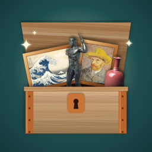

Restored
Art puzzles from the world's museums
Restored is a gentle puzzle game: travel through twenty cities and put 184 real masterpieces from The Metropolitan Museum of Art back together.
Getting help
Found a problem or have a question? Open a support request (a free GitHub account is needed) and it will be answered as soon as possible.
Common questions
How do I play a puzzle? Each puzzle type shows a short how-to the first time you play it. Tap the ? on any puzzle to see it again.
Is my progress saved? Yes, on your device. If you're signed in to iCloud, it's also shared between your iPhone and iPad.
Can I make the puzzles easier? Turn on Relaxed mode in Settings: no move limits, and stars only count hints.
Does it cost anything? No. Restored is free, with no ads and no in-app purchases.